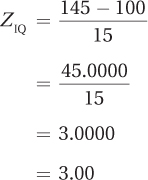

4.4 Probability
 StatClips: Probability DistributionsVideo on LaunchPad
StatClips: Probability DistributionsVideo on LaunchPad
StatClips: Probability: Basic RulesVideo on LaunchPad
StatClips: Probability: Overview and MotivationVideo on LaunchPad
The focus of this chapter now shifts to probability. To understand why probability is important, consider a study in which a sample of people with depression is divided into two groups, one of which is given psychotherapy and the other isn’t. After treatment, the two groups are assessed on a depression scale and the psychotherapy participants are found to be less depressed than the no-psychotherapy participants. Which conclusion, A or B, would a statistician draw?
Psychotherapy is effective in the treatment of depression.
Psychotherapy is probably effective in the treatment of depression.
A statistician would pick statement B, that psychotherapy is probably effective in the treatment of depression. Why? Because she would know that psychotherapy was effective for the sample tested, but she couldn’t be sure it would be effective for all the depressed people not in the sample, for the larger population of depressed people.
Statisticians’ conclusions involve probability, just as weather forecasters say it will “probably” rain tomorrow. The conditions may be right to predict that it will rain, but rain is not guaranteed. Probability concerns how likely it is that an event or outcome will occur. Probability is defined as the number of ways a specific outcome (or set of outcomes) can occur, divided by the total number of possible outcomes. The formula, with probability abbreviated as p and the specific outcome abbreviated as A, is given in Equation 4.4.
129
Equation 4.4 Formula for Calculating Probability
where p = probability
A = specific outcome
Coins are often used to teach probability. A coin has two possible outcomes, heads or tails, and they are mutually exclusive. This means the coin can only land heads or tails—not both—on a given toss. (Fairness, that each outcome is equally likely, is going to be assumed for all examples.) Applying Equation 4.4, if the coin has two possible outcomes, heads or tails, and there is only one way it can land heads, the probability of it landing heads is p(heads) = . This could be reported a number of ways:
Probability can be reported as a fraction. In this case, one would say, “There is a 1 out of 2 chance that a coin will turn up heads.”
Probability can be reported as a proportion by doing the math in the fraction, by dividing the numerator by the denominator: = .50. One could report, “The probability of a coin turning up heads is .50.” Or, one could say, “p(heads) = .50.”
Finally, by multiplying the proportion by 100, the probability can be turned into a percentage: .50 × 100 = 50. One could say, “There is a 50% chance that a coin will land heads.”
To get a little more complex than a single coin, let’s toss two coins so that two outcomes occur at once. We’ll assume that the two outcomes are independent. Independence means that the occurrence of one outcome has no impact on the other outcome. This means that how the first coin turns out, heads or tails, has no impact on how the second coin turns out.
As shown in Figure 4.21, there are four possible outcomes for the two coins: (1) the first is heads and the second is heads (HH), (2) the first is heads and the second is tails (HT), (3) the first is tails and the second is heads (TH), and (4) the first is tails and the second is tails (TT).
130
What is the probability of obtaining two heads? There’s one way such a result can occur out of four possible outcomes, so p(two heads) = = .25. What is the probability of getting a heads and a tails? There are two ways this can occur (HT or TH) out of four possible outcomes, so p(one heads and one tails) = = .50. Finally, there’s one other outcome possible for the two coins: p(two tails) = = .25. Table 4.3 summarizes the probabilities of the three outcomes for the two coins.
If a probability for an outcome is 1.00, or expressed as a percentage 100%, that means this outcome is a sure thing. In fact, any given outcome can’t have a probability higher than 1.00, and the sum of the probabilities of all the possible outcomes is 1.00. If two coins are tossed, it is guaranteed that one of these outcomes—two heads, or a heads and a tails, or two tails—will turn out. In addition, the probability of an outcome occurring can’t be less than .00, or 0%. A probability of zero means that an outcome can’t happen. Putting together the two facts in this paragraph, the probability for any given outcome can’t be less than zero or greater than 1. Stated more formally,
The probability for any given outcome can’t be less than zero or greater than 1.
.00 ≤ p(A) ≤1.00
A Common Question
Q When probabilities are reported as a proportion, they are written without a leading zero, for example, as .25 not as 0.25. Why?
A APA format says to put a zero before the decimal point for numbers that are less than 1 only when the numbers can be greater than 1. Probabilities can’t exceed 1, so they don’t get a leading zero.
The most common way that statisticians calculate and use probability involves the normal distribution. They often ask, if a variable is normally distributed and a case is selected at random from a population, how likely is it—how probable is it—that this case would have a score that falls in a certain range?
The material covered in Section 4.2 of this chapter can be construed in just this way. For example, if 50% of cases fall at or above the mean, then the probability of a case selected at random having a score at or above the mean is .50. If approximately 84% of the cases fall in the region at or below a z score of 1, then the probability of picking a case at random and it having a z score less than or equal to 1 is .84. (To move from a percentage to a probability, move the decimal two places to the left; to move from a probability to a percentage, move the decimal place two spots to the right.)
131
Statisticians use probabilities to determine if a result is common or rare. By common, they mean the result occurs frequently, that it falls somewhere near the middle of a normal distribution. Typically, statisticians consider something that has a 95% chance of occurring as common. A rare result is one that is unlikely to occur, one that falls in the ends, the tails, of the distribution. As will be seen in Chapter 6, how rare something must be to be considered rare is a decision that should be made on an experiment-by-experiment basis. But, usually, statisticians consider something rare if it has a 5% or less chance of occurring. Phrased in terms of probability, if p<.05, it is usually considered a rare outcome to a statistician.
Let’s find the z scores that mark off the middle 95% of scores in a normal distribution. This will lead us to one of the most important numbers in statistics, 1.96.
Follow the procedure in Table 4.4 to find the z scores that mark off the middle 95% of cases. The first step is to take the percentage, here 95%, and split it in two:
Why split it in two? Because that tells us how much of the area is above the mean and how much is below it. We now know that the 95% consists of 47.5% (half) above the mean and 47.5% (the other half) below the mean.
The second step is to look in column B of Appendix Table 1 to find the value closest to this percentage. Column B contains the exact value of 47.50, and the z score associated with it is 1.96. The final step in Table 4.4 is to report the results as a range from a negative z score to a positive z score: in a normal distribution, the middle 95% of cases fall from a z score of –1.96 to a z score of 1.96 (see Figure 4.22). Or, thinking in terms of probability, if one took a case at random from the population, the probability is .95 that it came from the interval ranging from z = –1.96 to z = 1.96.
132
Look at Figure 4.22 that shows the middle 95%. If 95% of the cases fall from a z score of –1.96 to a z score of 1.96, isn’t that the same as saying 5% of the cases don’t fall in that region? The complement to a common zone, the middle section, is the rare zone, the section in the ends, the two tails, of the distribution. This section in the extremes of the distribution is evenly divided between the two tails. The extreme 5%, for example, consists of the 2.5% at the very bottom of the normal distribution (the far left side in Figure 4.22) and the 2.5% at the very top of it (the far right side in Figure 4.22). Of course, this can also be expressed as a probability: p = .05 that a case selected at random from the population falls below –1.96 or above 1.96 in a normal distribution. (Table 4.4, which shows how to calculate a middle percentage, also contains guidelines on how to calculate an extreme percentage.)
The z scores, ±1.96, that mark off the middle 95% of scores in a normal distribution are also the z scores that mark off the extreme 5% of scores in a normal distribution.
The z scores, ±1.96, that mark off the middle 95% of scores in a normal distribution are also the z scores that mark off the extreme 5% of scores in a normal distribution. Keep your eyes open, these values will appear a lot more in later chapters. You’ll see 1.96 used in formulas; you’ll see 95% used in confidence intervals; and you’ll see two probabilities, p < .05 and p > .05, to indicate, respectively, whether a result is rare or common.
Worked Example 4.4
Mount Pleasant High School instituted a new math curriculum. The principal was not worried about how the average students would fare, but was concerned about the poorer and the better students. He wanted to assess the impact on the extreme 50% of students as measured by IQ. He needed to find the IQ scores that mark off the extreme 50% of cases, the 25% at the top and the 25% at the bottom.
Figure 4.23, where the X-axis is marked off with z scores and IQ scores, is the sketch he made. The approximate areas falling in each standard deviation are noted, and dotted lines are drawn about where the cut-off points will be. Based on the sketch, one cut-off point is expected to occur between z scores of –1 and 0. The other cut-off point will occur, symmetrically, on the positive side of the curve.
133
How did he know where to sketch the cut-off points? The objective is to have half of the 50% of extreme scores, or 25%, in each tail. He knew that below, or to the left of, a z score of –1, about 16% of the scores fall. That isn’t 25%. So, he needed to move partway into the next standard deviation, enough to add 9% to the existing 16%. This puts the z score somewhere between z = –1 and z = 0.
Now, with a rough idea of what the answer was, he followed the guidelines in Table 4.4 to find the exact answer. First, he cut the percentage in half. Then, he used column C of Appendix Table 1 to find the z score associated with the half percentage value. Looking in column C of Appendix Table 1, he found that the value closest to 25% was 25.14 and the z score associated with it was 0.67. In z score format, he had his answer: below a z score of –0.67 and above a z score of 0.67, the extreme 50% of cases fall.
But, to answer the original question, he needed to turn the z scores into IQ scores using Equation 4.3:
X = 100 + (–0.67 × 15)
= 100 + (–10.0500)
= 100 – 10.0500
= 89.9500
= 89.95
X = 100 + (0.67 × 15)
= 100 + 10.0500
= 110.0500
= 110.05
He now had his answer: The IQ scores that mark off the extreme 50% of scores are 89.95 and 110.05. He would need to follow the progress of students with IQs lower than 90 or higher than 110 to see how the new math curriculum affected the extreme 50% of students.
134
Practice Problems 4.4
Review Your Knowledge
4.16 What is the definition of probability?
4.17 What’s the smallest possible probability for an outcome? The largest?
4.18 If the z scores that mark off the middle 60% of scores are ±.84, what are the z scores that mark off the extreme 40% of scores?
Apply Your Knowledge
For Practice Problems 4.19–4.20, assume that in any given year, there are 52 weeks in a year, 365 days in a year, and equal numbers of every day of the week.
4.19 If a researcher picked one date at random out of a year, what is the probability of it being a Monday?
4.20 If a researcher picked one date at random out of a year, what is the probability of it not being a Monday?
4.21 What are the z scores that mark the middle 34% of scores?
4.22 If someone is picked at random, what is the probability that her IQ will be 123 or higher? (Use a mean of 100 and a standard deviation of 15.)
Application Demonstration
Let’s use some historical data about IQ to see material from this chapter in action. In the past, intelligence was used as the sole criterion of whether a person was classified as having an intellectual disability or being gifted. These days, multiple criteria are used. Let’s see what the implications of the former criteria are, based on an IQ test with a mean of 100 and a standard deviation of 15.
Let’s start with intellectual disability. At one point, people were considered intellectually disabled if their IQs were less than 70. Now, adaptive behavior—the ability to function in everyday life—is also taken into account. But, using the old definition, if a person were picked at random, what is the probability that he or she would be classified as intellectually disabled?
An IQ score below 70 means an IQ score less than or equal to 69, so our question becomes, “What is the probability of having an IQ score ≤ 69?” It always helps to visualize what one is doing, so sketch out a normal distribution. Figure 4.24 shows a normal distribution with the X-axis marked in both IQ scores and z scores. For the IQ scores, the midpoint is 100 and then the standard deviation is added or subtracted in both directions 3 times. Thus, the IQ scores range from 55 to 145. There is a dotted vertical line marking an IQ score of 69 and the area below the line, to the left of it, is shaded in. This is the area to be found. It should be apparent that this is not a large percentage of cases. In fact, it should be close to 2%.
Now, it is time to calculate more exactly. Using Equation 4.2, convert the IQ score to a z score:
135
An IQ score of 69 is equivalent to a z score of –2.07. (Remember, the fact that the z score is negative means that it falls below the mean.) Now, take that z score and find the percentage of cases at or below it. The flowchart in Figure 4.12 directs one to column C of Appendix Table 1. Turn to that table and find the row with a z score of 2.07. (Remember, the normal distribution is symmetrical, so one can consider 2.07 the same as –2.07.) The answer as a percentage, 1.92%, is found in column C. We can turn 1.92% into a probability of .0192 by moving the decimal place two places to the left. And that’s the answer—if a person were picked at random out of the world, the probability is .0192 that he or she would be classified as intellectually disabled if that classification were based entirely on IQ.
Here’s one more way to use this probability. If the population of the United States is 320 million, how many have IQs of 69 or lower? Answer this by taking the probability, .0192, and multiplying it by the population:
.0192 × 320,000,000 = 6,144,000
That’s a lot of people! Using the old standard, more than 6 million people in the United States should have IQs of 69 or lower and would be classified as intellectually disabled.
Let’s look at the other side of the intelligence continuum—genius. How common are geniuses? One cut-off for genius, on a standard IQ test (mean = 100 and standard deviation = 15), is a score of 145 or higher. This is sketched in Figure 4.25. It should be apparent that this is the upper limit of the simplified version of the normal distribution. There are very few people with IQ scores of 145 or higher.
To find out what percentage of people could be classified as geniuses, use Equation 4.2 to turn the IQ score into a z score:

136
The flowchart in Figure 4.11 indicates that the exact percentage may be found in column C of Appendix Table 1. Reading across the row in the z score table for a z score of 3.00, one finds that the value in column C is 0.135%. And that’s the answer: assuming intelligence is normally distributed and considering anyone with an IQ of 145 or higher a genius, then 0.135% of the population will be geniuses.
What does that mean for the 320 million Americans? Turn 0.135% into a proportion (.00135) and multiply that by the population:
.00135 × 320,000,000 = 432,000
Fewer than half a million Americans, only 432,000 to be exact, should have IQs high enough to be classified as geniuses.
One last thing, let’s suppose someone takes an IQ test and gets a 145. What’s his or her score as a percentile rank? The flowchart in Figure 4.18 says to consult column A of Appendix Table 1. Reading column A for a z score of 3.00, we see that the person’s score is 99.865, as a percentile rank. Not a bad percentile rank to have.
DIY
Dig out the standardized test scores, either the SAT or the ACT, that you used on your college application. How did you do? Can you turn your score into a z score and a percentile rank? For the combined SAT score, which is the sum of the math, writing, and critical reading tests, use a mean of 1,500 and a standard deviation of 300 (If you have taken the new SAT, which has only two subtests, use a mean of 1000 and a standard deviation of 200). For the ACT composite score, use a mean of 20.5 and a standard deviation of 5.5.
137